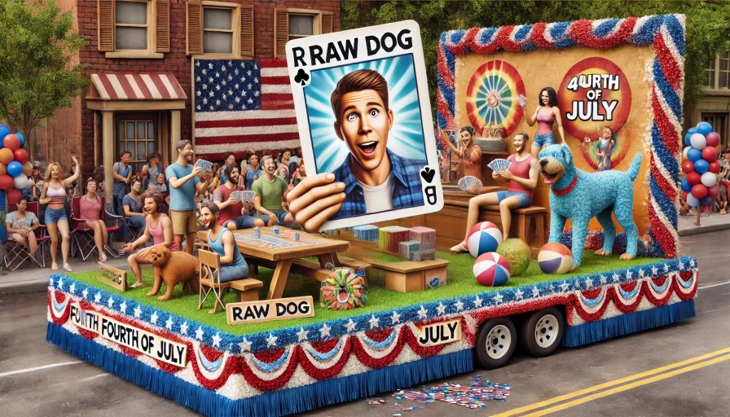
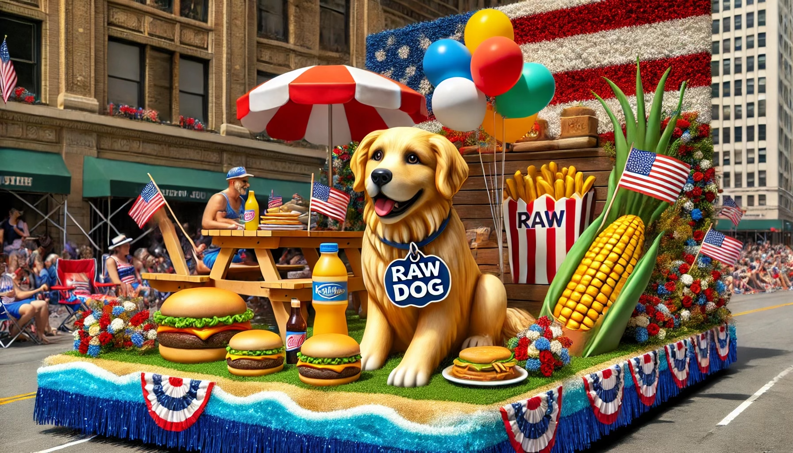
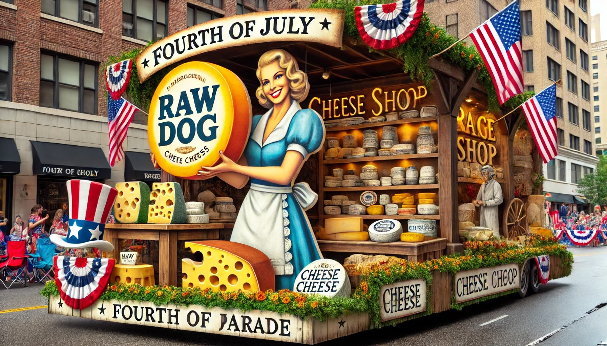
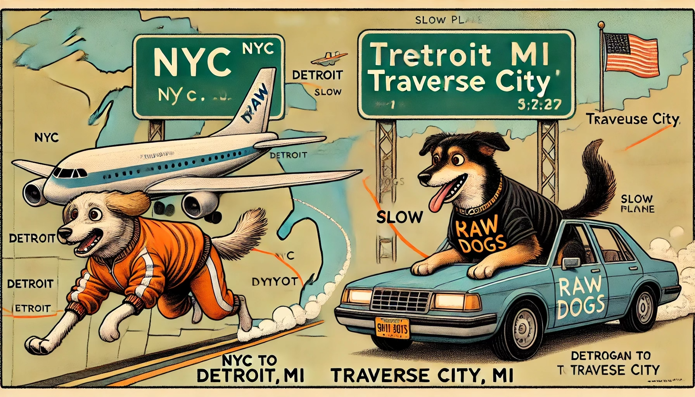
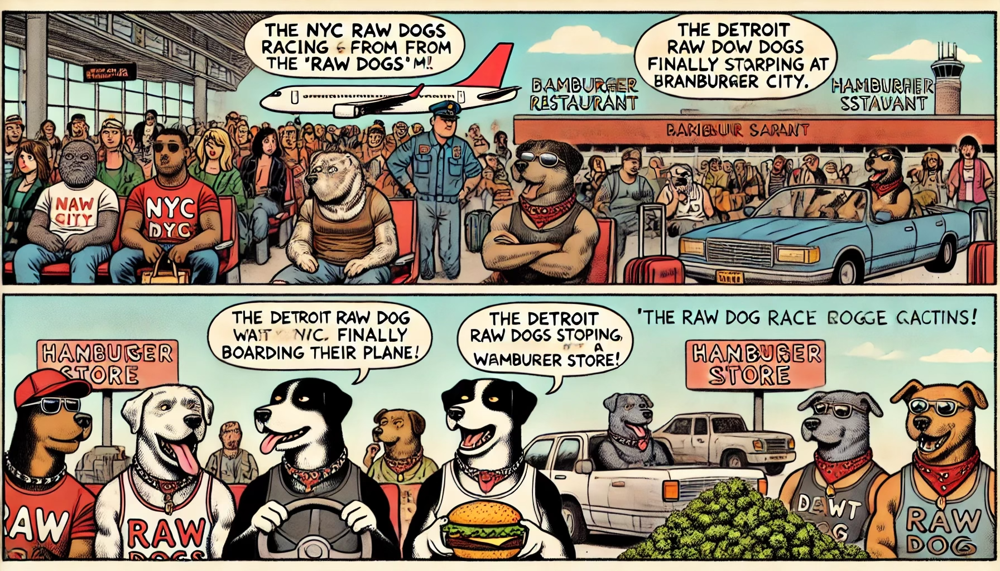

PERSONAL ARTIFACTS FROM THE ISLAND
ISLAND PARADE 1985-1992

Fourth of July Parade, 1987

Summer Festival, 1985

Harbor Festival, 1988
COASTAL MYSTERIES 1974-1983

Southeast Lighthouse Road, 1976

Mohegan Bluffs Trail, 1979
ISLAND LIFE 1965-1978
Island Harvest Festival, 1969
THESE MEMORIES DON'T BELONG TO YOU